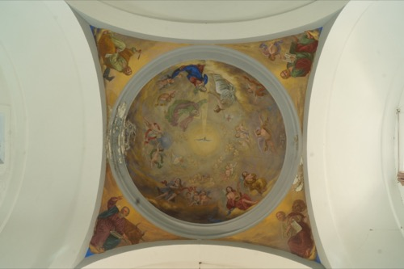
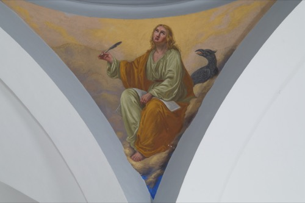
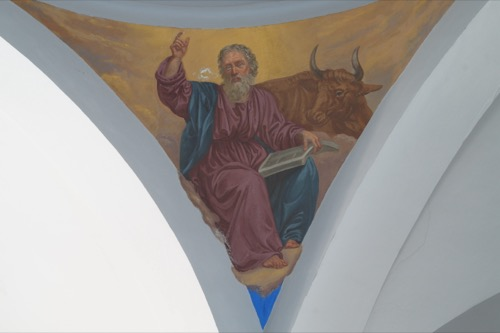
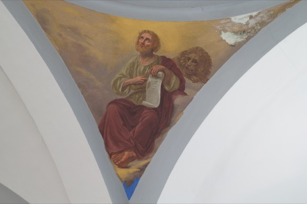
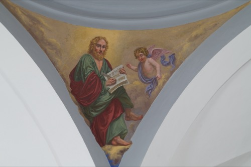

Coronació de Maria
Toca per veure la fitxa

Sant Joan l’Evangelista
Toca per veure la fitxa

Sant Lluc
Toca per veure la fitxa

Sant Marc
Toca per veure la fitxa

Sant Mateu
Toca per veure la fitxa